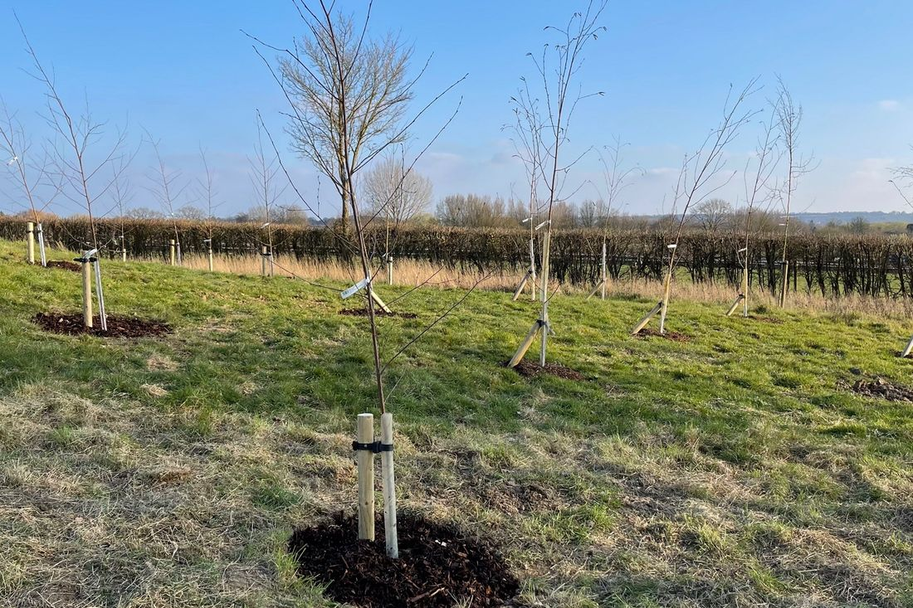

Tree and Hedge Planting in West Sussex
Native hedging, bare root trees and whips, root-balled and container-grown trees, planted properly and protected so they thrive.
The right tree, in the right place
Planting a tree is the easy part. Getting it to survive and thrive depends on choosing the right tree for the spot, planting it at the right time, and giving it the right protection and care in its first few years.
We plant trees and hedges for homeowners and landowners in Horsham and across West Sussex, and we can help with everything from choosing species to looking after them once they are in the ground.
Jump to:

Hedge planting
A new hedge is one of the best-value ways to add privacy, shelter and wildlife habitat to a garden, field edge or smallholding. We plant hedges across Horsham and West Sussex, from a few metres in a garden to long boundary lines.
Native mixed hedging
A mix of hawthorn, blackthorn, hazel, field maple, hornbeam and dog rose, giving flowers, berries and nesting cover. A good fit for field boundaries and country gardens.
Beech and hornbeam
Smart, formal hedges that hold their russet leaves through the winter, so they still screen when other deciduous hedges are bare. Both cut and shape well.
Evergreen screening
Yew, holly and Portuguese laurel give year-round privacy and shelter. Larger container-grown or root-balled plants give you a head start where you want screening quickly.
Gapping up and thickening
Planting into thin or gappy hedges to fill them out, so an old hedge becomes dense and private again.
Choosing how to plant: bare root, root-balled or container
Trees are supplied in three main ways, and each suits different jobs and different times of year.
Bare root trees and whips
Plant November to March
Lifted from the nursery while dormant, with no soil around the roots. Whips are small, slim young trees, and bare root trees come in larger sizes too. They cost less and establish well, which makes them ideal for hedging, woodland and planting lots of trees. The roots must not be allowed to dry out.
Root-balled trees
Plant November to March
Dug from the field with a ball of soil around the roots, wrapped in hessian. They suit larger trees where you want more height straight away. They are heavier and cost more, and need a properly prepared planting hole and good watering.
Container-grown trees
Plant most of the year
Grown in a pot, so they can be planted outside the winter season as long as the ground is not frozen or waterlogged. Best in spring or autumn. Summer planting is possible but needs a lot more watering. Good for single garden trees, fruit trees and filling gaps.
When is the best time to plant trees?
In the south of England the main planting season runs from late autumn to early spring, while trees are dormant. Use the chart to see the best months for each type, and when newly planted trees need the most water. Timings are a guide, and the weather each year matters, so we avoid planting when the ground is frozen or waterlogged.
| Jan | Feb | Mar | Apr | May | Jun | Jul | Aug | Sep | Oct | Nov | Dec | |
|---|---|---|---|---|---|---|---|---|---|---|---|---|
| Bare root and whipsNov to Mar | Best time | Best time | Possible with care | Not recommended | Not recommended | Not recommended | Not recommended | Not recommended | Not recommended | Possible with care | Best time | Best time |
| Root-balled treesNov to Mar | Best time | Best time | Possible with care | Possible with care | Not recommended | Not recommended | Not recommended | Not recommended | Not recommended | Possible with care | Best time | Best time |
| Container-grown treesBest spring and autumn | Possible with care | Possible with care | Best time | Best time | Possible with care | Possible with care | Possible with care | Possible with care | Best time | Best time | Best time | Possible with care |
| Watering new treesFirst two or three summers | Not recommended | Not recommended | Not recommended | Water in dry spells | Water in dry spells | Water regularly | Water regularly | Water regularly | Water in dry spells | Not recommended | Not recommended | Not recommended |
- ● Best time
- ○ Possible with care
- Not recommended
- ● Water regularly
- ○ Water in dry spells
- This month
Protecting your new trees
Young trees have a lot to put up with, from wind and rabbits to deer, strimmers and weeds. Protection depends on the tree and the site:
- Stakes and ties: one or two stakes with a tie that holds the trunk firmly but not tightly, so it can still move and strengthen. We check ties so they do not rub or cut into the bark, and the stakes usually come out after two or three years.
- Spiral guards and tree shelters: protect young stems from rabbits, hares, voles and mowers.
- Mesh guards and fencing: where deer are around, they can strip bark and browse young trees, so stronger guards or fencing are worth it.
- Mulch and weed mats: a layer of mulch keeps moisture in and weeds down, and is kept clear of the trunk itself.
Watering and aftercare
Lack of water in the first couple of summers is one of the commonest reasons new trees fail. In dry weather, a thorough soak is better than a light daily sprinkle, because it encourages deeper roots.
- First growing season: water well in dry spells, keep a weed-free circle around the base, and check the stakes and ties.
- Years two and three: keep watering through long dry spells, refresh the mulch and loosen ties as the trunk thickens.
- After that: formative pruning to shape the tree, the stakes come out, and any trees that have not taken are replaced.
Replacement trees after a TPO or planning condition
If a tree protected by a Tree Preservation Order is removed with the council's consent, the consent often comes with a condition to plant a replacement. The council usually sets out what it wants, such as the species, size, number and position of the new trees, when they must be planted, and what happens if one dies.
If a protected tree is removed without consent, the law places a duty on the landowner to plant another of an appropriate size and species in the same place as soon as reasonably possible. The council can serve a notice saying what must be planted and by when, and the replacement is normally protected in the same way as the original.
We plant to the council's requirements, whatever they say. We can help you understand your decision notice, choose a suitable tree and plant it in the right season so the condition is met. Always check your decision notice or speak to your local council's tree officer first.
Other planting we can help with
- Replacing ash: filling the gaps left by ash dieback with suitable species. See our ash dieback guide.
- Small copses and woodland: see our woodland management.
- Fruit and orchard trees: for gardens and smallholdings.
- Screening trees: for privacy and shelter.
- Memorial trees: a tree planted in memory of someone.
How it works
From the first visit to an established tree, in four simple steps.
- 1
Site visit
We look at the ground, space, light and any restrictions, and talk through what you want.
- 2
Choosing the trees
We agree species, sizes and how they will be supplied.
- 3
Planting day
Trees are planted, staked, guarded and mulched.
- 4
Aftercare
Advice on watering and care, and replacement of any that do not take.
Ready to get started? Contact Max
Call, message or ask for a free, no-obligation quote.
Tree and hedge planting questions
When is the best time to plant a tree?
In the south of England the main planting season runs from late autumn to early spring, roughly November to March, when trees are dormant. Bare root trees and whips and root-balled trees should be planted in that window. Container-grown trees can go in at other times too, best in spring or autumn, but summer planting needs a lot of watering. We avoid planting when the ground is frozen or waterlogged.
When is the best time to plant a hedge?
Bare root hedging plants are planted between November and March while they are dormant, which is the cheapest and most reliable way to plant a hedge. Container-grown and root-balled hedging can be planted over a longer period, but needs more watering, especially in summer. We avoid planting in frozen or waterlogged ground.
How many hedge plants do I need per metre?
For a native hedge it is usually three to five plants per metre, depending on the mix and how dense you want it, planted in a single row or a double staggered row. We work out the numbers when we see the site.
How long does a new hedge take to fill in?
Native hedging often takes a few years to thicken into a proper hedge. Larger plants, good watering, weed control and an early formative cut all help it fill in faster.
Do new trees need staking?
Larger trees usually do for the first two or three years, so the roots can anchor without the tree rocking in the wind. Small whips and young hedging generally do not, but they may need a guard to protect them.
How often should I water a newly planted tree?
In dry spells, a thorough soak about once a week is generally better than a little water every day, because it encourages the roots to go deeper. Keep this up through the first couple of summers, and check trees more often during hot, dry weather.
What if the council has told me to plant a replacement tree?
Read your decision notice or replacement notice carefully, because it will say what the council wants, such as the species, size, number and position, and by when. If you are unsure what it means, send it over and we will talk you through it. We can then choose suitable trees and plant them in the right season.
How close to my house can I plant a tree?
It depends on the species, how big it will grow and your soil. Large trees need plenty of space, and on shrinkable clay soils, which are found in parts of West Sussex, trees close to buildings can cause problems. We will talk through the options at the site visit.
Which areas do you cover?
We are based in Mannings Heath near Horsham and plant trees across West Sussex, including Horsham, Billingshurst, Southwater, Cowfold, Henfield, Storrington, Nuthurst and Lower Beeding.
Tree and hedge planting in Horsham and West Sussex
- Horsham
- Broadbridge Heath
- Christ's Hospital
- Southwater
- Mannings Heath
- Lower Beeding
- Nuthurst
- Maplehurst
- Cowfold
- Bolney
- Henfield
- Partridge Green
- Barns Green
- Billingshurst
- Storrington
Planning to plant some trees or a hedge?
Call Max or send a few photos on WhatsApp and he can talk you through what would suit your space.